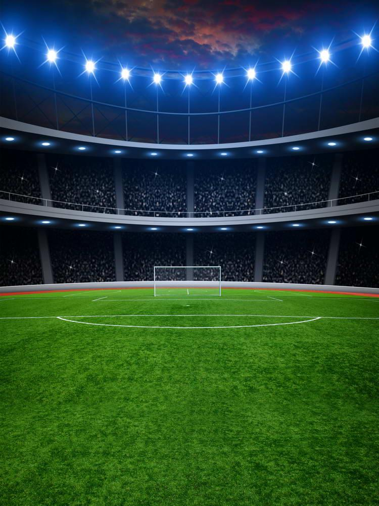

РБК Спорт
СМИ
сообщили о возможном переходе Месси и Роналду
в команду Бекхэма
Соперничество Криштиану Роналду и Лионеля Месси — соперничество между болельщиками португальского футболиста Криштиану Роналду и аргентинского футболиста Лионеля Месси и, предположительно, между самими спортсменами. В совокупности 12 раз выиграв «Золотой мяч» от ФИФА и France Football (семь раз — Месси, пять — Роналду) они считаются не только лучшими игроками своего времени, но и в целом всей футбольной истории. Являются одними из самых титулованных футболистов. Как аргентинец, так и португалец регулярно преодолевали барьер в 50 забитых голов за один сезон. Оба спортсмена на данный момент забили более 700 голов за всю профессиональную карьеру.